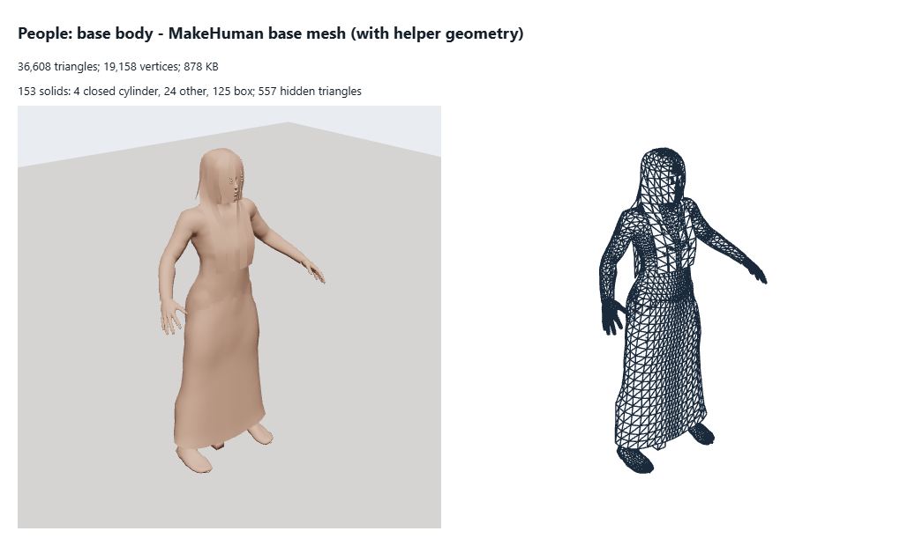

MakeHuman base mesh with helper geometry
What to change
- Budget: no geometry of its own (36,608 today): not shipped to the game: a build-time source only.
- Stays a build-time source; with its helper geometry (joints and fitting cubes, 36,608 triangles) it is never drawn.
- Remove its 557 hidden triangles: faces inside another part or pressed face to face, never seen.
- Loaded at run time from public/models/people (loadProxyItem in personBuild.ts, proceduralCrowd.ts, skinAppearance.ts): ship baked bodies only, not the MakeHuman pieces.
- Triangles
- 36,608
- Vertices
- 19,158
- Levels
- L0 36,608
- Memory
- 878 KB (geometry 878 KB, textures 0 KB)
- Per vertex
- 24 B: position:3xFloat32=12B normal:3xFloat32=12B
- Drawn as
- skinned
- Material
- MeshStandardMaterial (roughness 0.7, metalness 0, opacity 1)
- Shader
- three MeshStandardMaterial · skeleton
- Solids
- 153 solids: 4 closed cylinder, 24 other, 125 box
- Hidden triangles
- 557
- Shadow
- -
- Bones
- 53
- Source
public/models/people/base.bin(file)- Notes
- the file as shipped; the helpers (joints, proxies' fitting cubes) are not drawn